个人完成 / PERSONAL
孔朗 · 个人完成
- IP动作与角色细节优化
- 系列插画与场景构图
- 主题海报设计
- 包装视觉设计
- 文创产品视觉延展
HUANGDI MAUSOLEUM
ANCIENT CYPRESS
VISUAL EXTENSION
基于已有基础IP，优化角色动作与细节，并建立插画、海报、包装和文创应用组成的视觉延展系统。
EXPLORE THE PROCESS · 从角色优化到视觉延展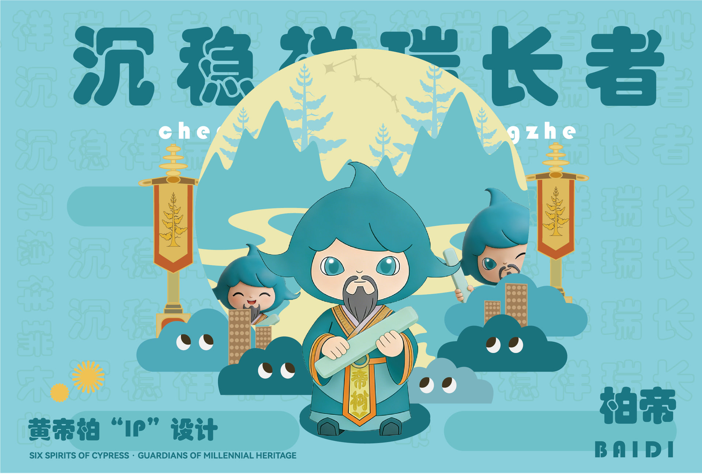
03 / BACKGROUND
这是一个通过网络承接的文化IP视觉延展项目。项目开始时已有基础IP，任务重点不是重新原创角色，而是提升角色的动作表现、细节统一度和后续应用能力。
我围绕古柏文化的视觉线索完成角色优化，并把角色置入插画、海报、包装与文创载体中，形成从单一IP形象到系列传播物料的延展路径。案例仅展示可公开的设计成果，不包含客户身份、沟通记录或委托信息。
基础IP由前期设计人员完成，并非本人原创；本案例聚焦本人负责的角色优化、插画与视觉延展。
04 / CULTURAL SOURCES
视觉延展从古柏的树形、枝叶和生长姿态出发，同时吸收山形层次、传统器物与地域建筑等图形线索，为不同角色建立可区分的文化属性。
这些元素没有作为孤立装饰直接堆叠，而是被重新组织为插画场景、角色道具、海报信息模块和包装图形，使文化线索能够在不同媒介中保持连续。
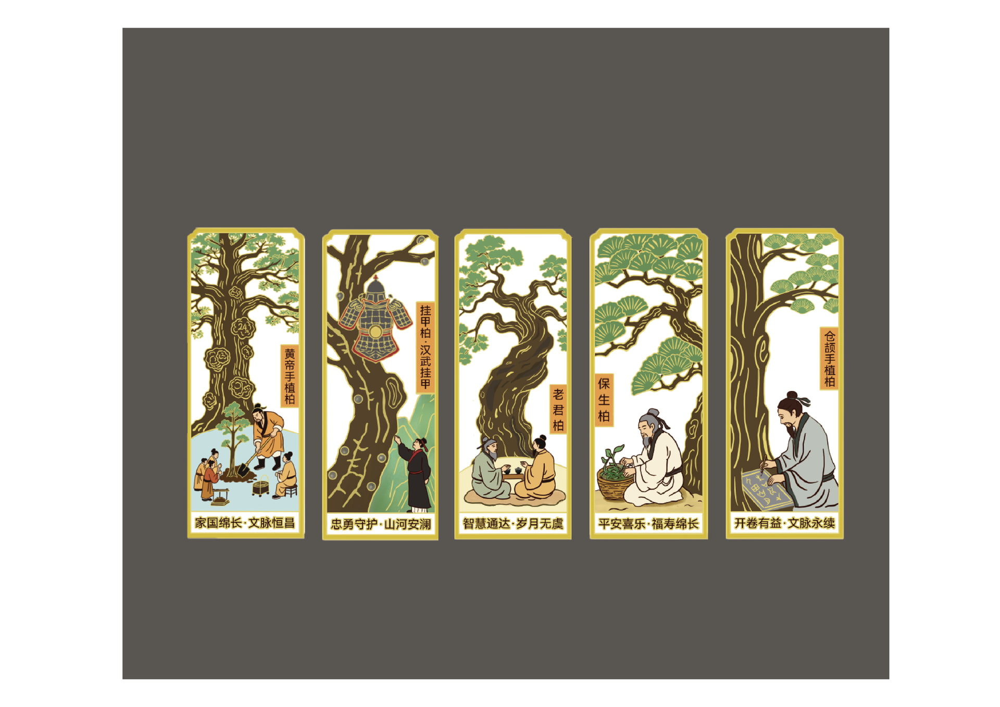
05 / CHARACTER REFINEMENT
在保留基础IP识别特征的前提下，我调整角色动作、服装与道具细节，并整理三视图和动作呈现，为后续插画、海报和包装应用建立更稳定的角色资产。
豆包AI用于三视图、动作生成和部分视觉探索参考；我负责筛选结果、修正细节并统一最终呈现。AI是过程辅助，不替代最终的插画构图与视觉设计。
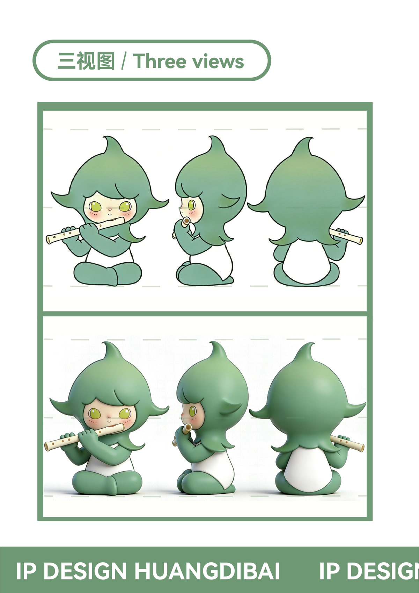
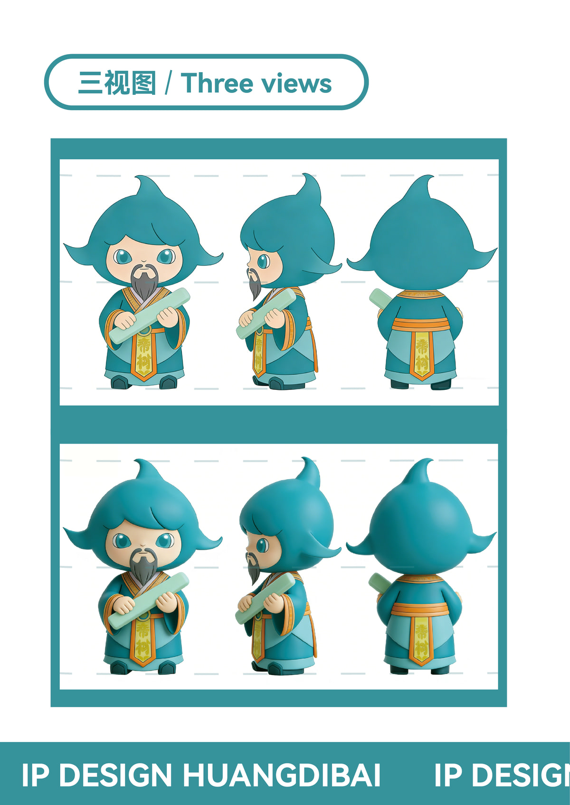
06 / ILLUSTRATION SYSTEM
系列插画以角色性格和文化寓意为线索，通过场景、道具、植物与色彩关系建立差异，同时保持统一的信息层级和版式结构。
插画场景、构图和视觉编排主要由我完成；其中角色基础来自既有IP，部分姿态探索使用AI辅助参考。
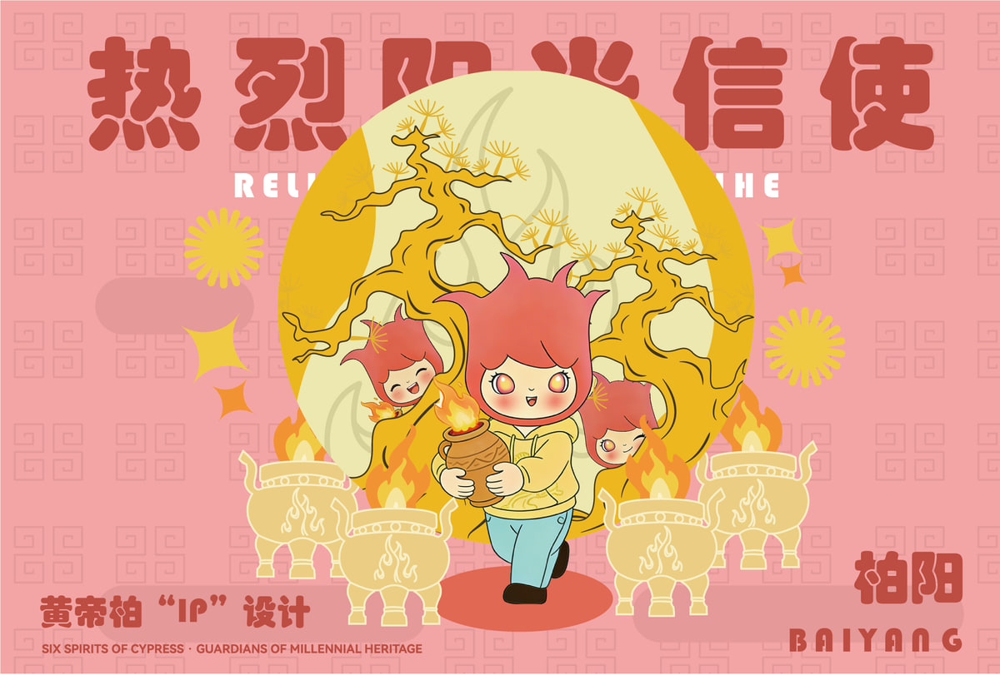
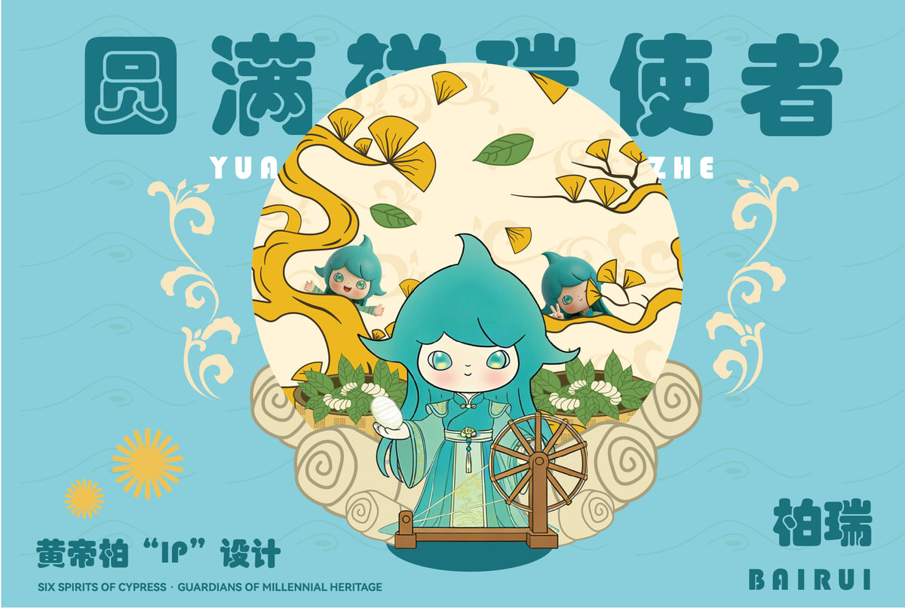
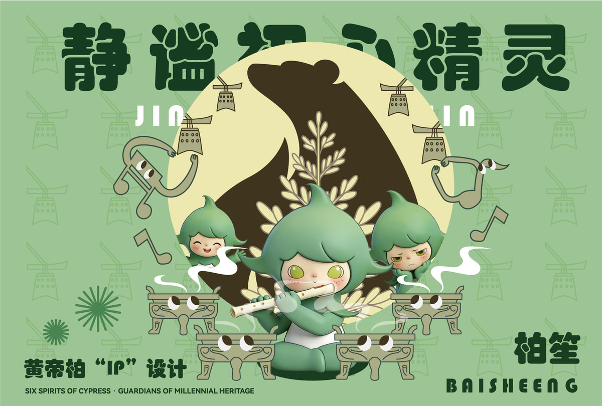
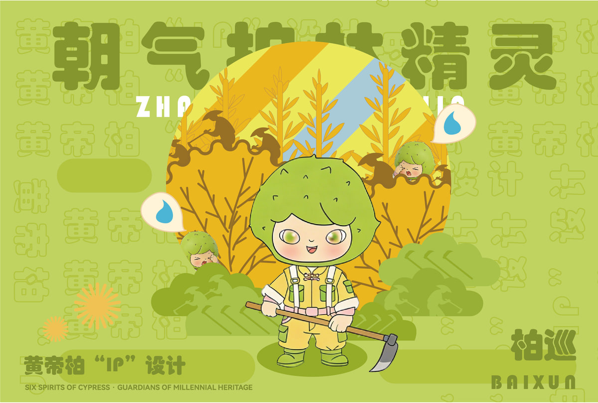
07 / POSTER APPLICATION
海报采用编辑式信息框、放大的角色名和高饱和配色，把角色、树种寓意和地域图形组织在同一版面中。
不同海报保持统一骨架，通过角色主色、道具和辅助纹样变化形成系列感，强化文化IP在宣传场景中的识别效率。
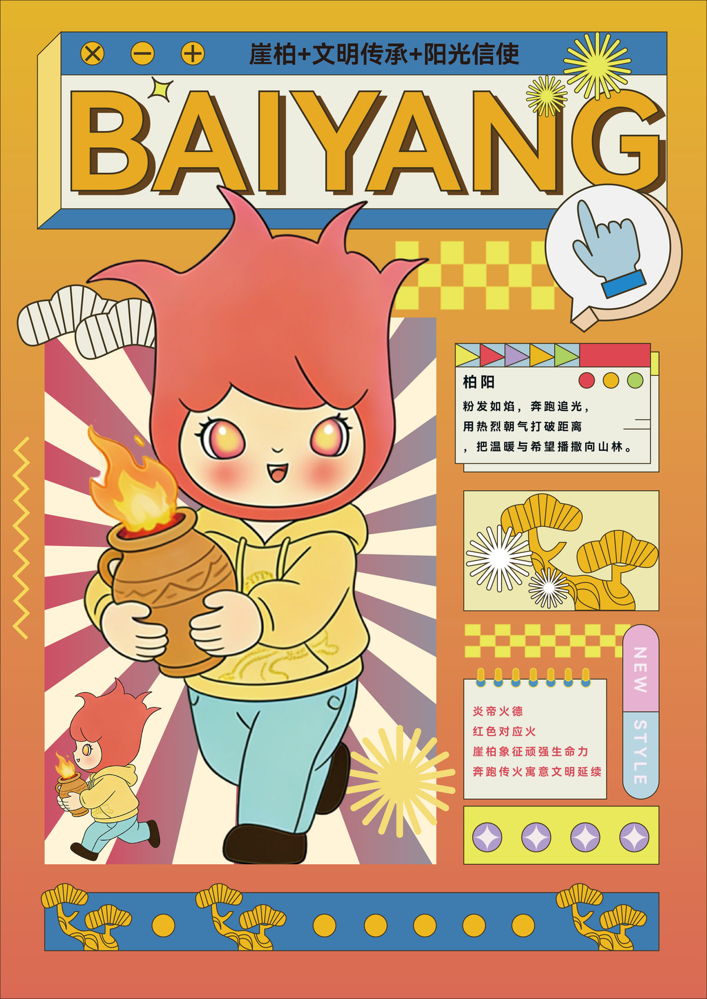
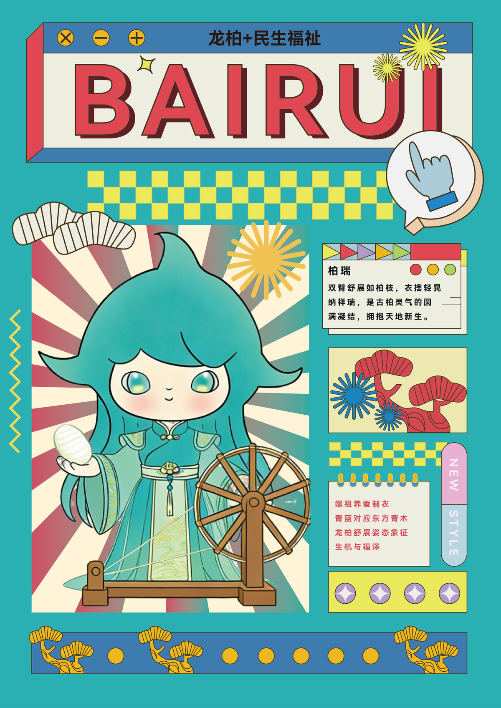
08 / PACKAGING & EXTENSIONS
包装延展以角色为视觉焦点，结合树种寓意、辅助图形和角色信息，在不同包装面之间建立连续阅读关系。
后续将同一视觉语言应用到礼盒、手提袋、小型文创与生活用品，验证系统在不同尺寸和载体中的适配能力。
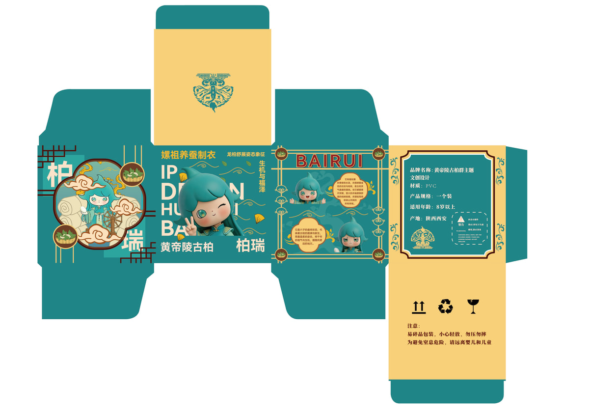
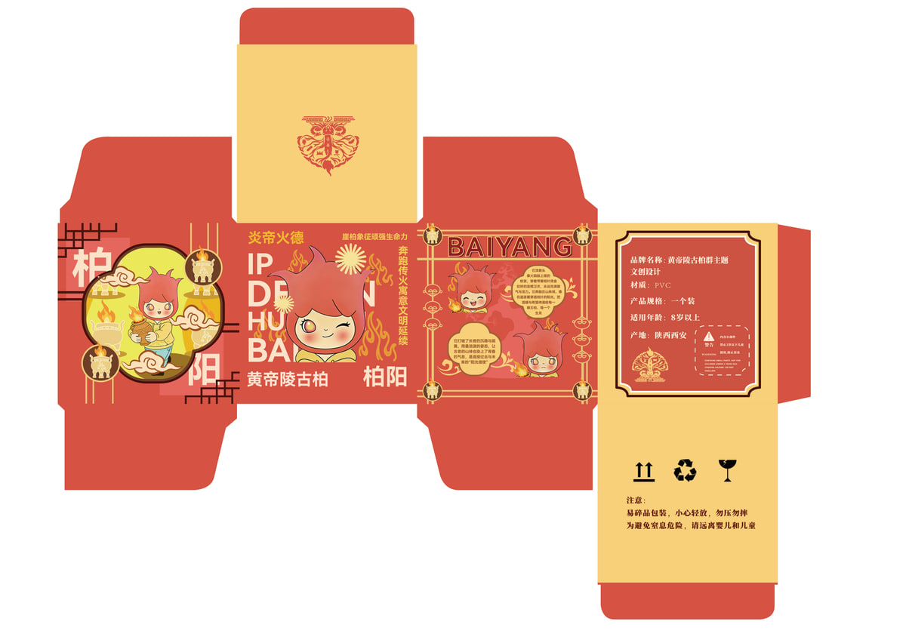
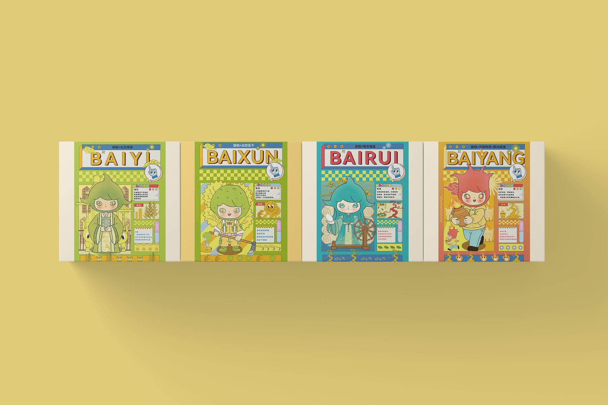
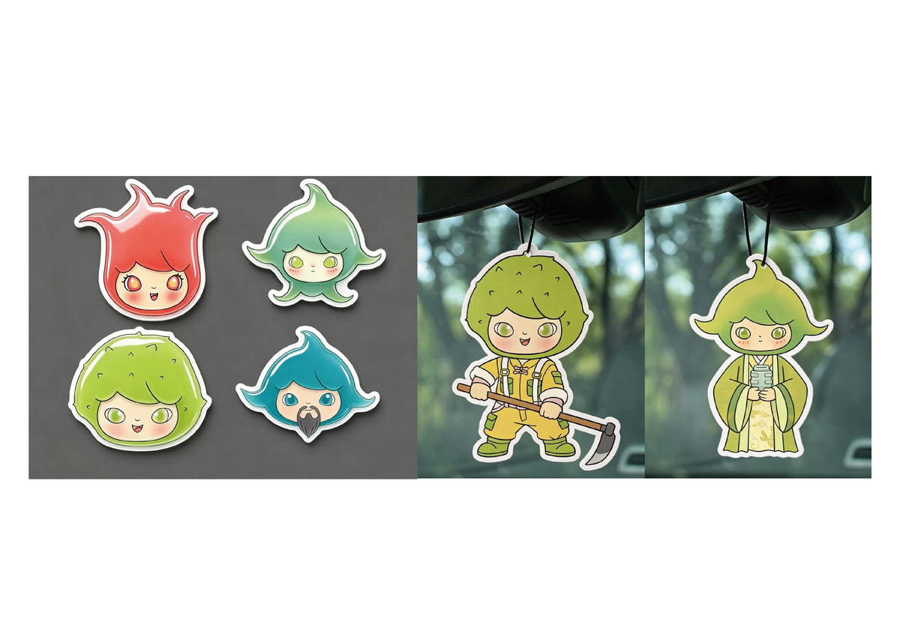
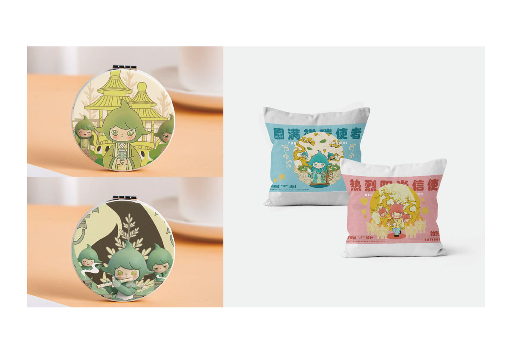
09 / CONTRIBUTION
项目价值在于：基于已有角色资产完成系统化优化与视觉延展，并把单一IP转化为能够适配多种传播媒介的系列成果。
个人完成 / PERSONAL
第三方基础 + AI辅助 / SOURCE + AI
公开边界 / PUBLIC
本页只展示本人完成或明确标注来源的公开设计成果；不展示客户信息、他人身份、聊天记录、委托细节或其他隐私资料。本项目定义为“文化IP视觉延展”，不表述为本人原创IP设计。